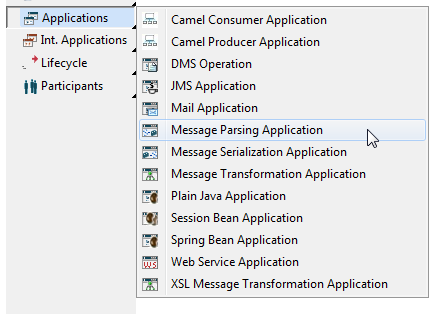
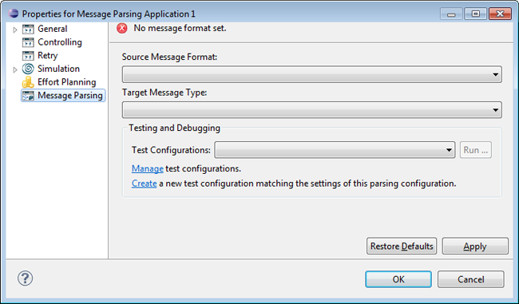
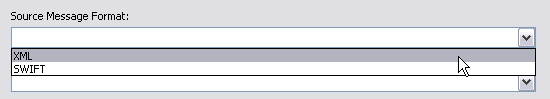
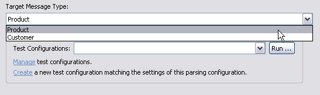
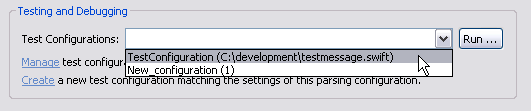
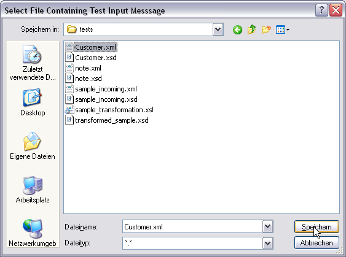
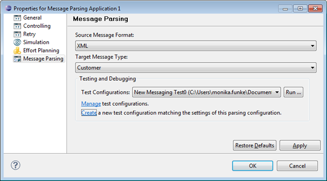
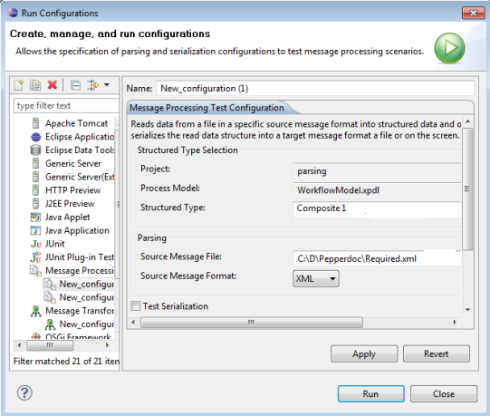
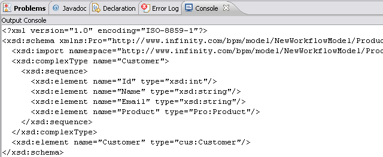
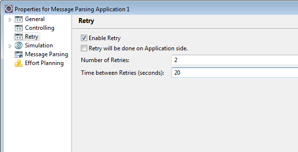

A Message Parsing application takes one or more input message data structures, performs the transformation specified for this application and returns one or more output message data structures. The parsing enforces validation and formatting.
To create a Message Parsing Application, select Application in the diagram toolbar palette and choose Message Parsing Application:

Figure: Creating a Message Parsing Application
The following properties can be set for message parsing applications:

Figure: Properties of a Message Parsing Application.
In the Source Message Format entry, you can choose between the following message formats:

Figure: Selecting the Source Message Type.
This is the format of the test input message file that will be passed to the parser.
In the Target Message Type entry select a target message type in the provided list. All structured types defined for the model will be provided.

Figure: Selecting the Target Message Type.
In the Testing and Debugging section, you can either manage or select existing test configurations, or create new test configurations.
To select a predefined test configuration click the drop-down menu for the Test Configurations entry. All previously created test configurations will be offered, where you can choose the one you want to use:

Figure: Choose a Test Configuration
Select Manage test configurations to edit existing test configurations in the Run Configuration dialog. Please refer to the section Parsing and Serialization Launch Configuration of the chapter Launching Message Transformations for detailed information on launch configurations for message applications.
Select Create to create a new test configuration matching the settings of the parsing configuration. A dialog opens where you have to select the file containing the test input message:

Figure: Select an Input File
Please take care that you pass an input file matching the format you selected in the Source Message Format entry and the input file is not empty, otherwise the parsing will fail.
Now a test configuration is created with the name "New Messaging Test<numberOfConfiguration>", which is entered in the Test Configurations entry:

Figure: New Test Configurations Entry
The settings of the new configuration are created automatically:

Figure: New Test Configuration
Note that the structured type is supported for configuration. To test the configuration, you have to enable the Test Serialization checkbox.
Test configurations can also be created from the main menu's run configuration. Please refer to the section Parsing and Serialization Launch Configuration of the chapter Launching Message Transformations for detailed information on how to create a launch configuration for message parsing applications from the main menu.
In case you enable the Screen Output checkbox, the resulting message will be displayed in the Console view. You can open this view by selecting Window > Show View > Console.

Figure: The parsed Message displayed in the Console View.
To save the result in a target message file, disable the Screen Output checkbox and enter a file or browse to an existing file in the Target Message File entry.
The configurable retry mechanism provides the facility to retry an operation in case the target service is temporarily unavailable.
For more information, please refer to Retry Mechanism of Non-interactive Applications section of the Applications Concept chapter.
If you enable the Retry functionality for a message parsing application, you have to define the number of retries and the time between retries in seconds. Note that the maximum number of retries is 10 and the maximum time between retries is restricted to 60 seconds. Additionally you can enable the retry to be performed on application side and thus disable a retry on engine side.

An application with an enabled retry functionality will retry for the defined number of times with a pause of the defined number of seconds, until it succeeds. If the application still fails after the defined number or time, it will no longer retry.